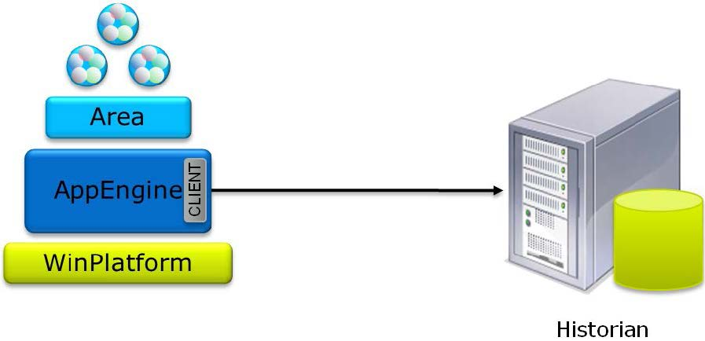
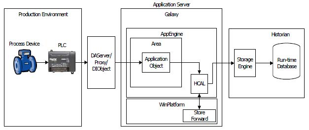
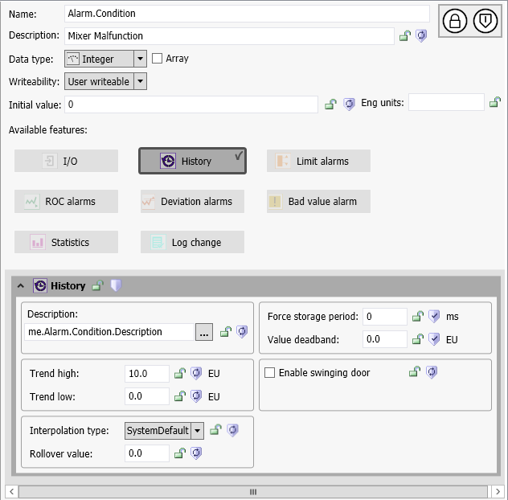
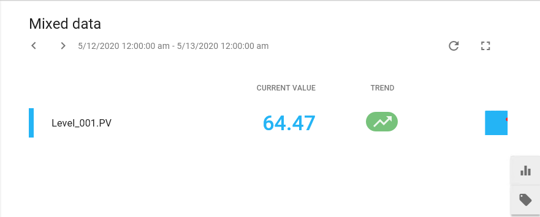

Source: AVEVA Application Server 2023 Training Manual, Module 6, Section 1 (pages 6-3 to 6-10)
Module 6 introduces history — how data flows from Application Server into the Historian for long-term storage and analysis.
Module 6 — Historizing Data (training environment photo)
21.1 History Architecture — The Big Picture
Reference: Module 6, Section 1 (pages 6-3 to 6-5)
Historizing data is one of the most important functions in any SCADA system. Without historical data, you cannot perform trending, root-cause analysis, regulatory reporting, or performance optimization. Application Server provides the bridge between live process data and a long-term Historian.
Key Concept — What is Historizing?
Historizing is the process of collecting attribute values over time and storing them in a time-series database (the Historian). It transforms real-time data points into a historical record that can be queried, trended, and analyzed.
The High-Level Architecture

High-level history architecture: Area contains the AppEngine (CLIENT) which communicates with the Historian server. The WinPlatform sits at the bottom providing the platform-level services. (Module 6, page 6-4)
The history architecture has four key players:
Component
Role in History
Area / AppEngine
Runs the application objects. The AppEngine (acting as CLIENT) sends attribute change data to the Historian for collection.
WinPlatform
Hosts the Store and Forward (S&F) cache. Buffers historical data locally on disk to prevent data loss during Historian outages.
Historian
Receives data from the AppEngine and writes it to the run-time database for permanent archival and retrieval.
PLC / Device
The source of raw process data that feeds into the system through data access servers.
Why a separate Historian? Application Server is optimized for real-time control and alarming, not for storing millions of time-stamped data points. The Historian is purpose-built for time-series data — it handles compression, high-speed writes, and efficient retrieval of historical data. The two work together as a team.
21.2 The Complete Data Flow — From PLC to Historian
Reference: Module 6, Section 1 (pages 6-4 to 6-6)
Understanding the complete data flow is essential for diagnosing problems and optimizing your history configuration.

Complete data flow: PLC → DAServer/Proxy/DBObject → AppEngine (Application Object in Area) → WinPlatform (Store and Forward cache) → Historian (Storage Engine → Run-time Database) (Module 6, page 6-5)
Let's trace the data through each step:
Step
Component
What Happens
1
PLC / Device
The source of raw process data — temperature, pressure, level, etc.
2
DAServer / Proxy / DBObject
Data access layer — reads values from the PLC via DDE, SuiteLink, or OPC and exposes them as attributes that Application Server can consume.
3
AppEngine (Application Object in Area)
The running application engine inside an Area. Receives attribute updates, applies logic and scripting, and triggers history collection when values change (if history is enabled).
4
WinPlatform (Store and Forward)
Buffers historical data on local disk in the S&F cache. Forwards data to the Historian when connectivity is available. Guarantees no data loss during temporary outages.
5
Historian
The Storage Engine writes data to the run-time database — the permanent time-series archive. Data is compressed and indexed for efficient querying.
Store and Forward — The Safety Net: The WinPlatform does not write directly to the Historian. Instead, it writes data to a Store and Forward (S&F) cache on local disk. If the Historian is temporarily unreachable, data is buffered locally and forwarded when connectivity is restored. This guarantees no data loss during network interruptions or Historian maintenance windows.
Common Pitfall: If the S&F cache drive fills up and the Historian remains unreachable, data WILL be lost. In production, always monitor S&F disk usage and configure a dedicated, high-capacity drive (not the OS drive).
21.3 Configuring History on an Attribute
Reference: Module 6, Section 1 (pages 6-7 to 6-10)
To historize a tag, you simply enable the History feature on its attribute. The training manual uses a mixer malfunction alarm as an example to walk through the configuration.

Tag configuration for a history-enabled attribute: Name = Alarm.Condition, Description = "Mixer Malfunction", Data type = Integer, User writeable. History is enabled with Value deadband = 0.0, Trend High = 10.0, Trend Low = 0.0, and Force storage period = 0 ms (on-change only). (Module 6, page 6-8)
Key History Configuration Parameters
Parameter
Value in Example
What It Controls
History (checkbox)
✅ Enabled
Master switch — without this checked, no data is collected regardless of other settings.
Value Deadband
0.0
Minimum change required to trigger storage. 0.0 = record every single change.
Trend High
10.0
Upper Y-axis display range for Historian Client trends.
Trend Low
0.0
Lower Y-axis display range for Historian Client trends.
Force Storage Period
0 ms
How often to store a value regardless of change. 0 = on-change only.
On-Change vs. Periodic Storage
Two storage modes:
On-Change Storage (Force storage period = 0 ms):
The Historian stores a new value only when the attribute actually changes. No periodic samples are recorded. This minimizes database size while capturing every meaningful transition. Best for digital/alarm states and slowly-changing analog values.
Periodic Storage (Force storage period > 0 ms, e.g., 5000 ms):
The Historian stores a value every N milliseconds regardless of whether the value changed. This guarantees a minimum sampling rate but increases storage requirements. Best for fast-changing values where you need guaranteed time resolution.
Tip — Value Deadband: The deadband works alongside the storage period. If deadband = 0.0, every change is recorded. If deadband = 0.5, the value must change by at least 0.5 units to trigger storage. Deadband of 0.0 is common for digital/alarm states (as in the example) but may need tuning for noisy analog signals to avoid excessive storage.
Tip — Trend High/Low: These values define the Y-axis range for Historian Client trends. They do not filter or truncate data — they only control how the data is visually displayed. Set Trend High to slightly above your maximum expected value and Trend Low to slightly below the minimum. The system uses these to scale the display in trend views.
21.4 Verifying History with Historian Client Web
Reference: Module 6, Section 1 (pages 6-9 to 6-10)
Once history is enabled and data is flowing, you can verify collection using Historian Client Web — a browser-based tool for viewing historical trends.
Historian Client Web — the main dashboard interface (typically at localhost:32573). This is your tool for browsing, trending, and analyzing historical data. (Module 6, page 6-9)

Trend result: Level_001.PV = 64.47, showing an upward trend over a 24-hour period (May 12–13, 2020). Data is being collected successfully and is available for analysis. (Module 6, page 6-10)
When you open a trend in Historian Client Web, you can verify:
Data is present — a value displayed confirms the Historian is collecting data
Trend shape — the curve shows how the value changes over time
Time range — adjust from 1 hour to 30+ days to see different perspectives
Current value — the latest reading is displayed with a time stamp
Tip — Reading Trends: If a trend shows a flat line at 0 followed by a sharp spike, it usually means the Historian started collecting data at a specific point in time (when history was enabled on the attribute). The spike represents the first real values arriving. Over time, the trend will show a continuous line representing the full history.
Quiz
Question 1
What are the four key components in the history data flow architecture?
Click to reveal answer
PLC/Device, DAServer/Proxy/DBObject, AppEngine (in the Area), WinPlatform (with Store and Forward cache), and the Historian. The four key runtime components are: AppEngine, WinPlatform, Historian, and the field device/data access layer.
Question 2
What is the purpose of the Store and Forward (S&F) cache on the WinPlatform?
Click to reveal answer
The S&F cache buffers historical data on local disk when the Historian is temporarily unreachable. When connectivity is restored, the buffered data is forwarded to the Historian, ensuring no data loss during outages.
Question 3
What does setting the "Force storage period" to 0 ms mean?
Click to reveal answer
Data is stored on-change only — a new value is written to the Historian only when the attribute's value actually changes. No periodic storage occurs. This minimizes database size while capturing every transition.
Question 4
What does a Value Deadband of 0.0 mean?
Click to reveal answer
Every single change in the attribute value is recorded, no matter how small. There is no minimum change threshold. A deadband of 0.0 is common for digital/alarm states but may cause excessive storage for noisy analog signals.
Question 5
What do the Trend High and Trend Low parameters control?
Click to reveal answer
They define the Y-axis display range for Historian Client trends. They do not filter or truncate data — they only control how the data is visually scaled in the trend display. Set them to bracket your expected minimum and maximum values.
Key Takeaways
History architecture flows from PLC → DAServer → AppEngine → WinPlatform (S&F) → Historian.
Store and Forward buffers data locally to prevent data loss during Historian outages.
Enabling history is a single checkbox on any attribute — the History checkbox.
Force storage period = 0 means on-change storage only; a non-zero value adds periodic sampling.
Value deadband controls the minimum change needed to trigger storage; 0.0 records everything.
Trend High/Low control display scaling only — they do not filter data.
Historian Client Web is the tool for verifying and analyzing collected historical data.
Next: Lesson 22 — History Configuration (deeper settings, template propagation, platform-level history settings)